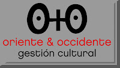

Exposición en New York
lunes, 18 de febrero de 2013
La Galeria O+O de Valencia, en colaboracion con Salomon Arts Gallery de Nueva York , inaugura el 27 de marzo de 2013 la exposición de cinco mujeres artistas:
Enriqueta Hueso
Pilar Palomares,
Nicole Herzog-Verrey,
Marta Martínez
Inés Ramseyer
una muestra artística que quiere contribuir a la conmemoración del Día Internacional de la Mujer.

Una EVA quíntuple y la Gran MANZANA
El espacio artístico Salomon Arts Gallery de Nueva York acoge a partir del mes de marzo de 2013 la exposición de cinco mujeres artistas: Enriqueta Hueso, Pilar Palomares, Nicole Herzog-Verrey, Marta Martínez e Inés Ramseyer; una muestra artística que quiere contribuir a la conmemoración del Día Internacional de la Mujer.
Dicha exposición congrega a cinco bregadoras de las artes con cinco discursos personalísimos pero no estancos ni aislados entre sí. Se trata de cinco propuestas que se alimentan y complementan mutuamente, pues estamos ante un repóquer de sensibilidades a cuál más audaz, pero cada una señoreando dominios distintos que las demás por más que se puedan encontrar los ímpetus creativos de unas u otras operando sobre semejantes terrenos circunstancialmente, como ocurre en el caso de la genial, por hilarante y comprometida, obra en la que comparten autoría Enriqueta Hueso y Pilar Palomares: “Spanish Revolution. La guerra silenciosa”.
Dentro del femenil conjunto cada cual tiene el punto de mira en uno u otro reducto. Ahora bien, todos los discursos plásticos que aquí se van a poder apreciar parecen entroncar en el compromiso desde la sensibilidad y la concordia hacia los otros y hacia el medio que nos contiene, quedando enlazados en la búsqueda de una atmósfera más respirable.
Al fin, todo resulta cohesionado en un discurso hondamente femíneo y universal con cinco flancos de expresión que seguro no dejarán indiferente al visitante.
A través de las muestras que serán exhibidas el observador percibirá el entretejido de una serie de propuestas, unas más lúdicas y expresionistas (Hueso-Palomares), otras no menos lúdicas pero sí de corte más introspectivo y esencialista (Herzog-Martínez-Ramseyer), llevándose, con seguridad, la impresión de conjunto de un compendio de talento, feminidad e irreverencia altamente alentador.
Conjunto centrípeto y centrífugo a un tiempo, aquí tenemos la ocasión de disfrutar del todo a través de cada una de las propuestas de cada una de estas mujeres, cosmopolitísimas todas, que desde ámbito tan internacional y multicultural nos hacen un guiño plástico, lúdico y combativo.
Diego Vadillo López